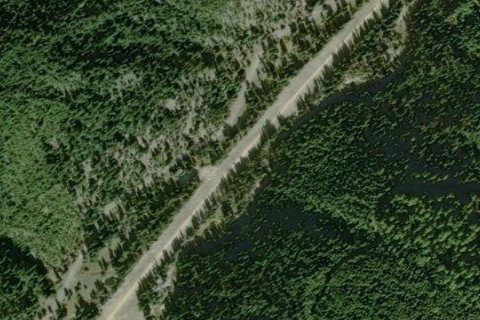

OROGRANDE, ID

Aerial imagery source: Esri, Vantor, Earthstar Geographics, and the GIS User Community
| Elevation | 4,419 ft |
|---|---|
| CTAF | 122.9 |
| Coordinates | 45.729110045934, -115.52805237622 |
Notes
[shortfield] Location Overview Orogrande sits about one nautical mile northeast of the small unincorporated community of Orogrande in Idaho County, nestled within the Nez Perce-Clearwater National Forests. The airstrip sits at an elevation of 4,419 feet above sea level and covers roughly 10 acres, with a single turf/dirt runway (designated 1/19) measuring 2,800 by 50 feet. The strip runs along Crooked Creek, surrounded by the deep timber and mountain terrain characteristic of this remote region of central Idaho. Camping & Recreation There are no camping amenities at the airstrip itself, but a campground sits about one mile to the south. Pilots should bring their own drinking water. That campground — locally known as Orogrande #1 and #2 — sits on both sides of the road, one side on the bank of Crooked River, and includes a toilet, fire rings, and camp pads. The surrounding national forest offers excellent opportunities for hiking, fishing, wildlife watching, and exploring the remnants of the area's mining heritage. Nearby, the Orogrande Summit area provides access to alpine country, Wildhorse Lake (about two miles by road), and the Columbia Ridge Trail #205, which leads toward the Buffalo Hump region. There is a rustic, 1930s-era cabin available for rent. It features two bedrooms, a kitchen with a wood cook stove, a vault toilet, and is nestled in an area popular for fishing, hiking, and hunting. Notes & Warnings The airstrip is unattended and has no control tower, instrument procedures, or lighting, making it suitable for VFR operations during daylight hours only. It features a wind indicator and segmented circle for traffic pattern guidance, with communications handled via CTAF at 122.9 MHz. No aviation fuel, aircraft maintenance, or restroom facilities are available on site. Density altitude is a serious consideration at 4,419 feet — hot summer days can push effective density altitude well above published field elevation. Pilots should plan to arrive in the early morning hours before conditions deteriorate and should be well-versed in backcountry mountain flying techniques before attempting this strip. History Seventeen years after the Nez Perce Indian War, quartz gold was discovered in the Buffalo Hump region of the Clearwater Mountains, and towns sprang up bringing civilization to the wild reaches of what is now the Orogrande area. The name "Orogrande" itself reflects this gold rush heritage — meaning "big gold" in Spanish — and the surrounding hills were once alive with prospectors, placer miners, and the rough-and-tumble commerce that followed them. The community that grew up around the mines eventually faded as the gold played out, leaving behind a quiet ghost of its former self deep in the national forest. The airstrip has become part of a broader preservation effort in recent years: the Recreational Aviation Foundation signed a Challenge Cost Share Agreement with the U.S. Forest Service in 2022 to fund maintenance and improvement of Orogrande and six other irreplaceable backcountry strips in the Nez Perce-Clearwater National Forest, with engineering assessments completed and work slated to begin in 2026.